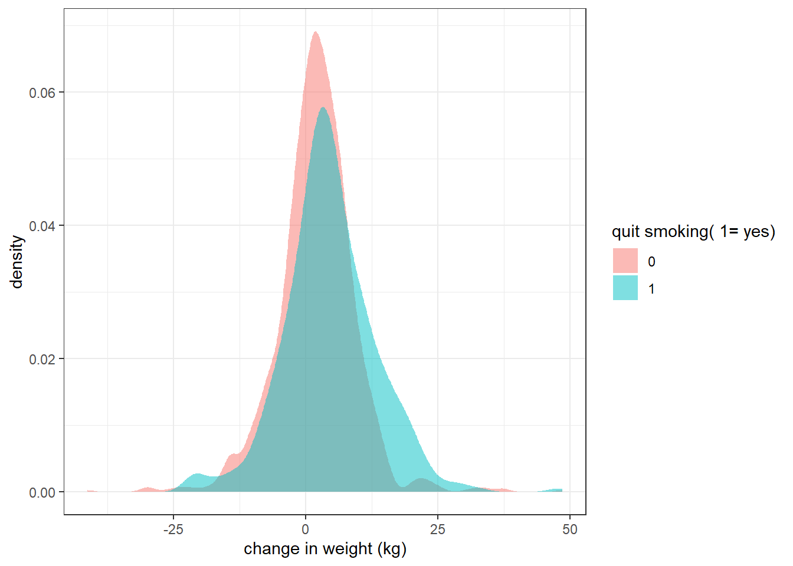

library(tidyverse)
library(finalfit)
library(broom)
library(propensity)
library(causalworkshop)
library(causaldata)
library(halfmoon)
library(rsample)
theme_set(theme_bw())CAUSAL WORKSHOP
nhefs_complete_uc <- nhefs_complete %>%
filter(censored ==0)#nhefs_complete_uc
df <- nhefs_complete_ucnhefs_complete_uc %>%
ggplot(aes(x = wt82_71, fill =factor(qsmk)))+
geom_density(alpha = 0.5, color = NA)+
labs(x = "change in weight (kg)",
fill = "quit smoking( 1= yes)")
nhefs_complete_uc %>%
group_by(qsmk) %>%
summarise(
mean_weight_change = mean(wt82_71,na.rm = TRUE),
sd = sd(wt82_71),
.groups ="drop"
)| qsmk | mean_weight_change | sd |
|---|---|---|
| 0 | 1.984498 | 7.449076 |
| 1 | 4.525079 | 8.748261 |
nhefs_complete_uc %>%
lm(wt82_71 ~ qsmk + sex + race +
age + I(age^2) + education + smokeintensity +
smokeyrs + I(smokeyrs^2) + exercise + active +
wt71 + I(wt71^2), data = .) %>%
tidy(conf.int = TRUE) %>%
filter(term == "qsmk")| term | estimate | std.error | statistic | p.value | conf.low | conf.high |
|---|---|---|---|---|---|---|
| qsmk | 3.414505 | 0.436367 | 7.824846 | 0 | 2.558571 | 4.270438 |
Fit Propensity score model
propensity_model <- nhefs_complete_uc %>%
glm(
qsmk ~ sex + race +
age + I(age^2) + education + smokeintensity +
smokeyrs + I(smokeyrs^2) + exercise + active +
wt71 + I(wt71^2),
family = binomial(),
data = .
)nhefs_complete_uc <- propensity_model %>%
# predict whether quit smoking
augment(type.predict = "response", data = nhefs_complete_uc) %>%
# calculate inverse probability
mutate(wts = wt_ate(.fitted, qsmk))Diagnose model assumptions
What’s the distribution of weights?
nhefs_complete_uc %>%
ggplot(aes(x = wts))+
geom_histogram(bins = 50, fill = "steelblue",color = "black")+
labs(x = "Weights",
title = "Distribution of weights")+
scale_y_continuous( labels = abs)nhefs_complete_uc %>%
ggplot(aes(x = .fitted))+
geom_mirror_histogram(aes(fill = factor(qsmk)), bins = 50)+
labs(x = "propensity score")nhefs_complete_uc %>%
ggplot(aes(x = .fitted))+
geom_mirror_histogram(aes(group = qsmk), bins = 50)+
geom_mirror_histogram(aes(fill = factor(qsmk),weight = wts), bins = 50,alpha = 0.5)+
labs(x = "propensity score",
fill = "quit smoking")Love Plots
plot_df <- tidy_smd(
nhefs_complete_uc,
c(wt71,smokeyrs,smokeintensity,sex,race,exercise,education,age,active),
.group = qsmk,
.wts = wts
)plot_df %>%
ggplot(aes(
x = abs(smd),
y = variable,
group = method,
color = method
))+
geom_love()Estimate causal effect with IPW
ipw_model <- nhefs_complete_uc %>%
lm(wt82_71 ~ qsmk,
data = .,
weights = wts)
ipw_estimate <- ipw_model %>%
tidy(conf.int = TRUE) %>%
filter(term == "qsmk")
ipw_estimate| term | estimate | std.error | statistic | p.value | conf.low | conf.high |
|---|---|---|---|---|---|---|
| qsmk | 3.28161 | 0.4098794 | 8.006282 | 0 | 2.477639 | 4.085581 |
Fix standard errors with robus SEs
library(estimatr)
ipw_model_robust <- nhefs_complete_uc %>%
lm_robust(
wt82_71 ~ qsmk,
data = .,
weights = wts
)
ipw_estimate_robust <- ipw_model_robust %>%
tidy(conf.int = TRUE) %>%
filter(term == "qsmk")
as_tibble(ipw_estimate_robust)| term | estimate | std.error | statistic | p.value | conf.low | conf.high | df | outcome |
|---|---|---|---|---|---|---|---|---|
| qsmk | 3.28161 | 0.5267321 | 6.230131 | 0 | 2.248435 | 4.314786 | 1564 | wt82_71 |
Fixing confidence intervals with bootstrap
bootstrapped_nhefs_data <- bootstraps(
nhefs_complete_uc,
times = 1000,
# required to calculate CIs later
apparent = TRUE
)fit_ipw <- function(split,...){
.df <- analysis(split)
# fit propensity score model
propensity_model <-
glm(
qsmk ~ sex + race +
age + I(age^2) + education + smokeintensity +
smokeyrs + I(smokeyrs^2) + exercise + active +
wt71 + I(wt71^2),
family = binomial(),
data = .df
)
# calculate inverse probability weights
.df <- propensity_model %>%
augment(type.predict = "response", data = .df) %>%
mutate(wts = wt_ate(.fitted,qsmk))
# fit correctly bootstrapped ipw model
lm( wt82_71 ~ qsmk, data = .df, weights = wts) %>%
tidy()
}Using {rsample} to estimate our causal effect
# fit ipw model to bootstrapped samples
ipw_results <- bootstraps(nhefs_complete_uc, 1000, apparent = TRUE) %>%
mutate(results = map(splits, fit_ipw))
# get T-statistic-based CIs
boot_estimate <- int_t(ipw_results,results) %>%
filter(term == "qsmk")
boot_estimate| term | .lower | .estimate | .upper | .alpha | .method |
|---|---|---|---|---|---|
| qsmk | 2.255124 | 3.295695 | 4.31906 | 0.05 | student-t |
ipw_estimate <- as_tibble(ipw_estimate)
ipw_estimate_robust <- as_tibble(ipw_estimate_robust)
boot_estimate <- as_tibble(boot_estimate)plot_data <- tibble(
method = c("ols", "bootstrap", "robust"),
estimate = c(ipw_estimate$estimate, boot_estimate$.estimate, ipw_estimate_robust$estimate),
conf.low = c(ipw_estimate$conf.low, boot_estimate$.lower, ipw_estimate_robust$conf.low),
conf.high = c(ipw_estimate$conf.high, boot_estimate$.upper, ipw_estimate_robust$conf.high)
)
plot_data| method | estimate | conf.low | conf.high |
|---|---|---|---|
| ols | 3.281610 | 2.477639 | 4.085581 |
| bootstrap | 3.295695 | 2.255124 | 4.319060 |
| robust | 3.281610 | 2.248435 | 4.314786 |
ggplot(plot_data, aes(x = estimate, y = method)) +
geom_point(size = 4,color = "steelblue") +
geom_pointrange(aes(xmin = conf.low, xmax = conf.high),color = "steelblue") + # Confidence intervals
# theme_minimal(base_size = 14) +
labs(x = "estimate", y = NULL) +
theme(axis.text.y = element_text(size = 14, face = "bold"),
axis.title.x = element_text(size = 16, face = "bold"))Matching in R (ATT)
library(MatchIt)
m <- matchit(
qsmk ~ sex + race +
age + I(age^2) + education + smokeintensity +
smokeyrs + I(smokeyrs^2) + exercise + active +
wt71 + I(wt71^2),
data = nhefs_complete
)
mA `matchit` object
- method: 1:1 nearest neighbor matching without replacement
- distance: Propensity score
- estimated with logistic regression
- number of obs.: 1566 (original), 806 (matched)
- target estimand: ATT
- covariates: sex, race, age, I(age^2), education, smokeintensity, smokeyrs, I(smokeyrs^2), exercise, active, wt71, I(wt71^2)matched_data <- get_matches(m, id = "i")
matched_data <- as_tibble(matched_data)
head(matched_data)| i | subclass | weights | seqn | qsmk | death | yrdth | modth | dadth | sbp | dbp | sex | age | race | income | marital | school | education | ht | wt71 | wt82 | wt82_71 | birthplace | smokeintensity | smkintensity82_71 | smokeyrs | asthma | bronch | tb | hf | hbp | pepticulcer | colitis | hepatitis | chroniccough | hayfever | diabetes | polio | tumor | nervousbreak | alcoholpy | alcoholfreq | alcoholtype | alcoholhowmuch | pica | headache | otherpain | weakheart | allergies | nerves | lackpep | hbpmed | boweltrouble | wtloss | infection | active | exercise | birthcontrol | pregnancies | cholesterol | hightax82 | price71 | price82 | tax71 | tax82 | price71_82 | tax71_82 | id | censored | older | distance |
|---|---|---|---|---|---|---|---|---|---|---|---|---|---|---|---|---|---|---|---|---|---|---|---|---|---|---|---|---|---|---|---|---|---|---|---|---|---|---|---|---|---|---|---|---|---|---|---|---|---|---|---|---|---|---|---|---|---|---|---|---|---|---|---|---|---|---|---|---|---|---|
| 11 | 1 | 1 | 428 | 1 | 0 | NA | NA | NA | 135 | 89 | 0 | 43 | 0 | 19 | 2 | 12 | 3 | 176.5938 | 63.96 | 79.83226 | 15.872257 | 42 | 30 | -30 | 24 | 0 | 0 | 0 | 0 | 0 | 0 | 0 | 0 | 0 | 0 | 0 | 0 | 0 | 0 | 1 | 3 | 3 | 2 | 0 | 0 | 0 | 0 | 0 | 0 | 0 | 0 | 0 | 0 | 0 | 1 | 1 | 2 | NA | 173 | 0 | 2.346680 | 1.797363 | 1.3649902 | 0.5718994 | 0.5493164 | 0.7929688 | 11 | 0 | 0 | 0.2611513 |
| 358 | 1 | 1 | 9870 | 0 | 0 | NA | NA | NA | 138 | 92 | 1 | 44 | 0 | 19 | 3 | 12 | 3 | 160.6875 | 62.03 | 58.96701 | -3.062992 | 21 | 10 | 0 | 24 | 0 | 0 | 0 | 0 | 0 | 0 | 0 | 0 | 0 | 0 | 0 | 0 | 0 | 0 | 1 | 2 | 3 | 3 | 0 | 0 | 1 | 0 | 0 | 0 | 0 | 0 | 0 | 0 | 0 | 0 | 1 | 0 | 3 | 197 | 0 | 1.606445 | 1.460693 | 0.5773926 | 0.2419739 | 0.1456909 | 0.3354492 | 379 | 0 | 0 | 0.2613505 |
| 15 | 2 | 1 | 446 | 1 | 1 | 88 | 1 | 3 | 141 | 79 | 1 | 71 | 0 | 17 | 2 | 0 | 1 | 147.0938 | 75.64 | 56.69905 | -18.940954 | NA | 40 | -40 | 41 | 0 | 1 | 0 | 0 | 0 | 0 | 0 | 0 | 1 | 0 | 0 | 0 | 0 | 0 | 0 | 4 | 4 | NA | 0 | 1 | 1 | 0 | 0 | 0 | 0 | 0 | 1 | 0 | 0 | 1 | 1 | 0 | 15 | 229 | NA | NA | NA | NA | NA | NA | NA | 15 | 0 | 1 | 0.1958319 |
| 308 | 2 | 1 | 8403 | 0 | 0 | NA | NA | NA | 103 | 66 | 1 | 36 | 0 | 21 | 2 | 16 | 5 | 158.5000 | 50.69 | 57.15264 | 6.462639 | 9 | 15 | 5 | 20 | 0 | 0 | 0 | 0 | 0 | 0 | 0 | 0 | 0 | 0 | 0 | 0 | 0 | 0 | 1 | 2 | 3 | 1 | 0 | 1 | 0 | 0 | 0 | 1 | 0 | 0 | 0 | 0 | 0 | 0 | 0 | 0 | 3 | 178 | 1 | 2.692871 | 2.103027 | 1.5224609 | 0.6379395 | 0.5900879 | 0.8843994 | 324 | 0 | 0 | 0.1959745 |
| 18 | 3 | 1 | 596 | 1 | 0 | NA | NA | NA | 151 | 80 | 1 | 48 | 0 | 18 | 2 | 12 | 3 | 164.0000 | 62.03 | 70.30682 | 8.276817 | 36 | 2 | -2 | 30 | 0 | 0 | 1 | 0 | 0 | 0 | 0 | 0 | 0 | 0 | 0 | 0 | 0 | 0 | 1 | 1 | 2 | 1 | 0 | 1 | 0 | 0 | 0 | 0 | 0 | 0 | 0 | 0 | 0 | 1 | 1 | 0 | 3 | 225 | 0 | 2.241699 | 1.828125 | 1.0498047 | 0.5059814 | 0.4135742 | 0.5439453 | 18 | 0 | 0 | 0.3154689 |
| 868 | 3 | 1 | 21057 | 0 | 0 | NA | NA | NA | 106 | 63 | 1 | 52 | 0 | 20 | 2 | 12 | 3 | 169.1875 | 65.54 | 68.94604 | 3.406040 | 39 | 5 | 0 | 32 | 0 | 0 | 0 | 0 | 2 | 0 | 0 | 1 | 0 | 0 | 2 | 0 | 0 | 0 | 1 | 3 | 4 | NA | 2 | 1 | 0 | 0 | 0 | 1 | 0 | 2 | 2 | 0 | 0 | 0 | 1 | 0 | 5 | 223 | 0 | 2.015625 | 1.814941 | 0.9449463 | 0.4839478 | 0.2009888 | 0.4609985 | 912 | 0 | 1 | 0.3154042 |
m <- matchit(
qsmk ~ sex + race +
age + I(age^2) + education + smokeintensity +
smokeyrs + I(smokeyrs^2) + exercise + active +
wt71 + I(wt71^2),
data = nhefs_complete,
link = "linear.logit",
caliper = 0.1
)
mA `matchit` object
- method: 1:1 nearest neighbor matching without replacement
- distance: Propensity score [caliper]
- estimated with logistic regression and linearized
- caliper: <distance> (0.06)
- number of obs.: 1566 (original), 782 (matched)
- target estimand: ATT
- covariates: sex, race, age, I(age^2), education, smokeintensity, smokeyrs, I(smokeyrs^2), exercise, active, wt71, I(wt71^2)A caliper in propensity score matching refers to the maximum allowable difference in propensity scores between matched treated and control units. It ensures that matches are close in propensity score space, improving balance between groups and reducing bias. In choosing a caliper size, a common rule of thumb is using 0.2 times the standard deviation of the logit of the propensity score .
# Perform nearest neighbor matching
match_out <- matchit(qsmk ~ sex + race + age + I(age^2) + education + smokeintensity +
smokeyrs + I(smokeyrs^2) + exercise + active + wt71 + I(wt71^2),
data = nhefs_complete_uc, method = "nearest", ratio = 1)
# Extract matched data
matched_data_att <- match.data(match_out)
# Estimate ATT
att_model <- lm(wt82_71 ~ qsmk, data = matched_data_att)
tidy(att_model)| term | estimate | std.error | statistic | p.value |
|---|---|---|---|---|
| (Intercept) | 1.419537 | 0.4030214 | 3.522236 | 4.52e-04 |
| qsmk | 3.105542 | 0.5699583 | 5.448718 | 1.00e-07 |
ATT Using Inverse Probability Weighting (IPW)
fit_ipw_att <- function(split, ...){
.df <- analysis(split)
# Fit propensity score model
propensity_model <- glm(
qsmk ~ sex + race + age + I(age^2) + education + smokeintensity +
smokeyrs + I(smokeyrs^2) + exercise + active + wt71 + I(wt71^2),
family = binomial(),
data = .df
)
# Predict propensity scores
.df <- propensity_model %>%
augment(type.predict = "response", data = .df) %>%
mutate(wts = wt_ate(.fitted,qsmk, exposure_type = "binary")) # ATT weights
# Fit weighted regression for ATT
lm(wt82_71 ~ qsmk, data = .df, weights = wts) %>%
tidy()
}
# Bootstrap ATT estimates
ipw_att_results <- bootstraps(nhefs_complete_uc,times = 1000, apparent = TRUE) %>%
mutate(results = map(splits, fit_ipw_att))
boot_estimate <- ipw_att_results %>%
# calculate T-statistic-based CIs
int_t(results) %>%
filter(term == "qsmk")
boot_estimate| term | .lower | .estimate | .upper | .alpha | .method |
|---|---|---|---|---|---|
| qsmk | 2.30265 | 3.250571 | 4.280324 | 0.05 | student-t |
ipw_att_results %>%
unnest(cols = results) %>%
ggplot(aes(x = estimate))+
geom_histogram(bins = 20, color = "white", fill = "steelblue")boot_estimate <- ipw_att_results %>%
# calculate T-statistic-based CIs
int_t(results) %>%
filter(term == "qsmk")
boot_estimate| term | .lower | .estimate | .upper | .alpha | .method |
|---|---|---|---|---|---|
| qsmk | 2.30265 | 3.250571 | 4.280324 | 0.05 | student-t |
df <- propensity_model %>%
augment(type.predict = "response", data = nhefs_complete) %>%
mutate(w_ate = wt_ate(.fitted,qsmk))ECDF PLOTS
ECDF plots are useful for checking propensity score balance before and after matching. They show the cumulative distribution of propensity scores for treated vs. control groups, helping assess whether the groups are comparable.
df %>%
ggplot(aes(x = wt71, color =factor(qsmk)))+
geom_ecdf(linewidth = 1)+
scale_color_viridis_d(option = "viridis", labels = c("Yes","No"),"Quit Smoking")+
labs(x = "Weight in Kg in 1971",
y = "Proportion <= x",
title = "Unweighted ECDF"
)Weighted ECDF
df %>%
ggplot(aes(x = wt71, color =factor(qsmk)))+
geom_ecdf(aes(weights = w_ate), linewidth = 1)+
scale_color_viridis_d(option = "viridis", labels = c("Yes","No"),"Quit Smoking")+
labs(x = "Weight in Kg in 1971",
y = "Proportion <= x",
title = "Weighted ECDF"
)Weighted tables
Create a design object to incorporate the weights
library(survey)
svy_des <- svydesign(
ids = ~1,
data = df,
weights = ~w_ate
)